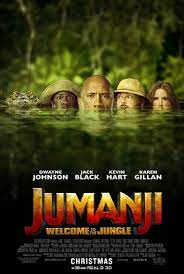
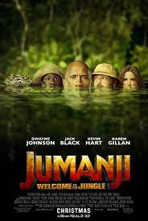

| Years active: |
1996–2004; 2011–2013; 2016 (wrestling) |
1999–present (acting) |
Birth name: |
Dwayne Douglas Johnson |
| Born: |
Hayward, California,1972/05/02（ |
| Occupation: |
Actor , producer , professional wrestler , businessman |
| Years active: |
1996–2004; 2011–2013; 2016 (wrestling) |
1999–present (acting) |

 
